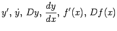
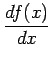
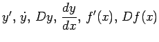
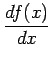
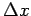
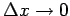
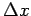
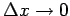

Inhalt Index DeskTop Bronstein

 Differentialrechnung Differentiation von Funktionen einer Veränderlichen Differentialquotient
Differentialrechnung Differentiation von Funktionen einer Veränderlichen Differentialquotient


Die Ableitung einer Funktion y=f(x) ist eine neue Funktion von  , die mit den Symbolen  oder  gekennzeichnet wird und die für jeden Wert von x gleich dem Grenzwert des Quotienten aus dem Zuwachs der Funktion
, die mit den Symbolen  oder  gekennzeichnet wird und die für jeden Wert von x gleich dem Grenzwert des Quotienten aus dem Zuwachs der Funktion  und dem entsprechenden Zuwachs  für  ist:
und dem entsprechenden Zuwachs  für  ist: